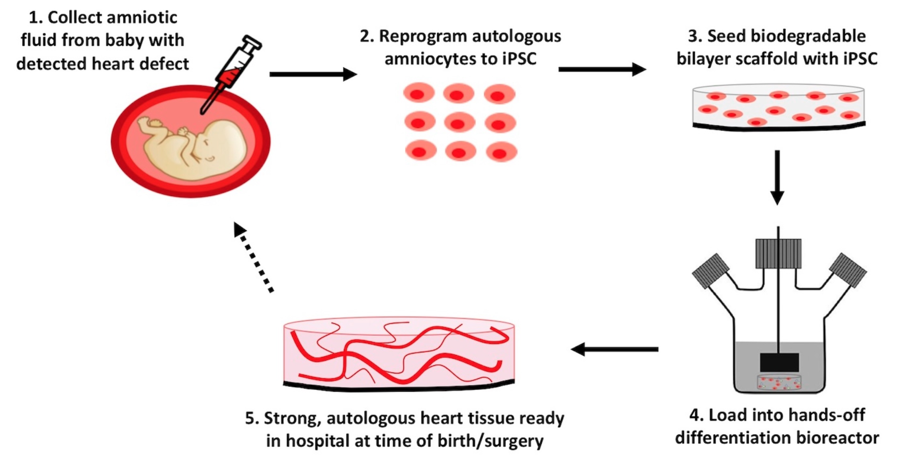

Laboratory-Grown Heart Tissue for Surgical Reconstruction of Structural Defects in Newborns
Our goal is to isolate stem cells from amniotic fluid before birth and create heart tissue that can be used to reconstruct the heart with the baby’s own cells after birth.